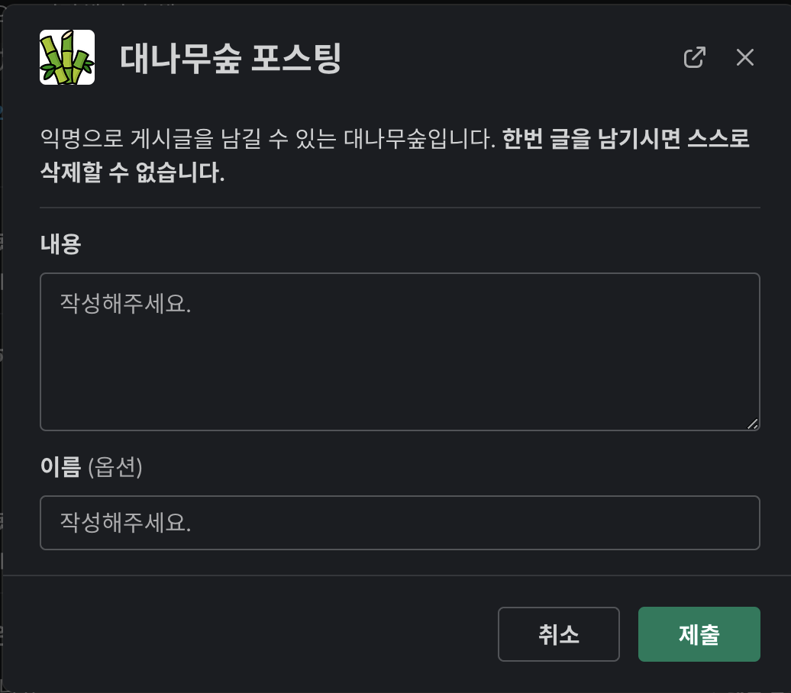

import os
from dotenv import load_dotenv
load_dotenv(verbose=True)
SLACK_SIGNING_SECRET = os.getenv('SLACK_SIGNING_SECRET')
SLACK_BOT_TOKEN = os.getenv('SLACK_BOT_TOKEN')
CHANNEL_NAME=os.getenv("CHANNEL_NAME")1 Slack API(Bolt)를 사용해 대나무숲 앱을 제작한 후기
1.1 개요
직장 동료가 추천해준 이 글을 보고, 우리 회사 Slack에도 대나무숲을 만들어 보았습니다. 원 글은 Node.js를 이용했지만, Javascript에 익숙하지 않아 Slack에서 제공하는 Python용 Bolt API를 사용했습니다.
본 글을 읽기에 앞서, Bolt Documentation을 읽고 오시면 이해해 큰 도움이 됩니다.
1.2 과정 - api.slack.com
먼저, Slack API에 접속하여, Create New App을 선택합니다. From Scratch를 선택한 후, App Name과 워크스페이스를 선택합니다. 저는 대나무숲 봇, Zarathu 워크스페이스를 선택했습니다.

먼저, Incoming Webhooks에서, Incoming Webhooks를 활성화합니다.
다음으로, Interactivity & Shortcuts에 들어가 Interactivity를 활성화시키고, Request URL을 본인의 ngrok주소 또는 실제 주소 + “/slack/events”(바뀌면 작동하지 않습니다.)로 설정합니다.
아래의 Shortcuts에서, 두 가지를 추가합니다. 한 가지는 Global로(게시글 포스팅), 다른 한 가지는 On Messages로(댓글 포스팅) 합니다. Name, Short Description, Callback ID는 적당히 작성합니다.
다음으로, OAuth & Permission에 들어가 아래의 Scopes에서, Bot Token Scopes에 필요한 권한을 추가합니다.
- channels:history, read
- chat: write, write.customize, write.public
- commands
- incoming-webhook
그 후, 같은 페이지 상단에 보이는 Bot User OAuth Token이 자신의 Bot Token입니다.
1.3 과정 - 코드
파일 구조는 아래와 같습니다.
project
│ dockerfile
│ requirements.txt
│ .env
│ .gitignore
│
└───src
│ │ app.py
│ │ name.py
│
└───.venv
│ ...먼저, Python 가상 환경을 만들기 위해 다음 명령어를 실행합니다. python -m venv .venv
그리고, venv를 활성화 시킵니다. source .venv/bin/activate (macOS)
이제 Python 가상 환경에 접속했습니다.
먼저, Slack API 및 dotenv를 사용하기 위해 다음 명령어로 bolt와 dotenv를 설치합니다.
pip install python-dotenvpip freeze로 현재 설치된 pip 패키지를 조회 해 보면,
python-dotenv==0.21.0
slack-bolt==1.16.1
slack-sdk==3.19.5위와 같습니다. 버전은 설치 한 시점에 따라 다를 수 있습니다.
시작하기에 앞서, 환경변수를 설정하도록 하겠습니다.
프로젝트 루트의 .env 파일에
SLACK_SIGNING_SECRET=<자신의 Signing Secret>
SLACK_BOT_TOKEN=<자신의 Bot Token>
CHANNEL_NAME=대나무숲를 추가합니다.
Signing Secret은 api.slack.com에서 자신의 앱을 선택한 후 Basic Information에 있는 Signing Secret 입니다.
이제 실제로 코드를 만들어 보겠습니다. src/app,py를 생성합니다.
로 dotenv 환경을 불러오고, 변수에 .env의 내용을 불러옵니다.
다음으로,
import logging
logging.basicConfig(level=logging.DEBUG)
from slack_bolt import App
from slack_sdk.errors import SlackApiError로 logging 기능과 Slack API를 불러옵니다. SlackApiError는 추후 Error Handling에 사용 될 에정입니다.
app = App(
token=SLACK_BOT_TOKEN,
signing_secret=SLACK_SIGNING_SECRET
)위 코드로, Slack API를 초기화합니다.
Slack API는 Decorator를 통해 각각의 Action에 따른 기능을 수행합니다. FastAPI를 사용 한 경험에 비추어 설명 해 보면, 예를 들어 @app.post("/")의 경우 “/”로 post 요청을 보낸 경우에 작동하는 것 처럼, @app.shortcut("post")는 post라는 ID의 shortcut을 실행 한 경우에 작동합니다.
우리는 Modal을 이용해 게시글과 답글을 작성할 수 있도록 할 것입니다. Slack에서는 Modal을 쉽게 생성할 수 있는 도구를 제공하고 있습니다. 그 도구를 통해 Modal을 생성한 후, action_id와 text, callback_id, private_metadata 등을 수정하면 쉽게 우리가 원하는 Modal 창을 얻을 수 있습니다.
저는 아래와 같이 했습니다.

우리는 - “reply” action - “port” shortcut - “reply” shortcut 을 받은 경우 modal이 필요하므로 아래와 같은 Decorator를 작성합니다.
@app.action("reply")
@app.shortcut("post")
@app.shortcut("reply")
def open_modal(ack, body, client, logger):
...Slack API는 요청을 받는 경우 ack()를 실행하도록 요청하고 있습니다. 그러므로, open_modal(…)이 호출되는 경우 {python} ack()가 실행되어야 합니다.
def open_modal(ack, body, client, logger):
ack()다음으로, open_modal이 끝난 경우, 즉 유저가 Modal에 무엇인가를 입력하여 반환 된 경우를 보겠습니다. Modal이 닫히면, 그 내용을 대나무숲 봇이 #bambooforest 채널에 포스팅/댓글 작성 해야합니다. 이를 위해, Modal에 callback_id를 설정해야 합니다. 우리는 “view_post”라고 하겠습니다.
def open_modal(ack, body, shortcut, client, logger, block_actions):
ack()
try:
try:
try:
message_ts=body['message_ts']
except:
message_ts=body['container']['message_ts']
except:
message_ts="" # Global의 경우 message_ts가 없음
result = client.views_open(
trigger_id=body["trigger_id"],
view={
# View 위 내용 생략
"callback_id": "view_post",
"private_metadata": message_ts
}
)
logger.info(result)
except SlackApiError as e:
logger.error("Error creating conversation: {}".format(e))그러면 위 “view_post” 콜백를 처리할 수 있는 함수를 만들어 보겠습니다. 마찬가지로 Decorator을 사용합니다.
@app.view("view_post")
def handle_submission(ack, body, client, view, logger):
ack()
logger.info(body)
message_ts=view['private_metadata']
content=view['state']['values']['post_input_block']['post_content_input']['value']
username=view["state"]["values"]["name_input_block"]["name_input"]['value']“view_post” 콜백이 실행된 경우, ack() 하고 body를 logging 합니다. 이후, 복잡한 경로에 있는 값을 접근하기 쉽도록 값을 변수에 대입합니다. 우리는 message_ts를 private_metadata로 전달했습니다. 또, content와 username의 값은 view[“state”][“values”]의 [‘post_input_block’][‘post_content_input’][‘value’] 및 [“name_input_block”][“name_input”][‘value’]에 존재합니다.
익명 게시판이므로, Username을 작성하지 않은 경우가 많을 것입니다. 이 경우, 아래에서 만들 username() 함수를 통해 랜덤한 username을 생성합니다. 또한, 게시글의 경우 message_ts 값이 없습니다(위에서 ““를 대입합니다). 경우에 따라 type=”게시글” 또는 type=“댓글”을 저장합니다.
if username is None:
username=randname()
if message_ts == "":
type="게시글"
else:
type="댓글"위에서 정리된 내용을 바탕으로 메시지를 발송합니다. message_ts가 있으면(즉 댓글이면) 메시지를 해당 thread에, 아니면 .env에서 지정한 채널에 발송합니다.
send_message=[
{
"type": "header",
"text": {
"type": "plain_text",
"text": ":bamboo: 익명 메시지 :bamboo:"
}
},
{
"type": "divider"
},
{
"type": "section",
"text": {
"type": "mrkdwn",
"text": f"*{username}님의 {type}입니다.*"
}
},
{
"type": "section",
"text": {
"type": "plain_text",
"text": f"{content}"
},
"accessory": {
"type": "button",
"action_id": "reply",
"text": {
"type": "plain_text",
"text": "댓글 달기",
"emoji": True
}
}
}
]
if message_ts == "":
client.chat_postMessage(channel=CHANNEL_NAME, blocks=send_message)
else:
client.chat_postMessage(channel=CHANNEL_NAME, thread_ts=message_ts, blocks=send_message)src/name.py는 다음과 같습니다.
import random
firstNames = [
"깔끔한",
"근면한",
# ...
]
lastNames = [
"토끼",
"오리",
# ...
]
def randname():
return firstNames[random.randint(0, len(firstNames)-1)] + " " + lastNames[random.randint(0, len(lastNames)-1)]randname()은 firstNames와 lastNames의 원소를 각각 랜덤으로 추출하여 합쳐 반환하는 함수입니다.
위 firstNames, lastNames는 이 글의 GitHub 저장소를 참조하였습니다.
src/app.py 상단에
from name import randname을 추가합니다.
마지막으로, src/app.py 마지막에
if __name__ == "__main__":
app.start(3000)을 추가하고, 서버에서 python3 src/app.py를 실행하면 정상적으로 작동하는 것을 알 수 있습니다.
1.4 후기
생각보다 Slack API Documentation이 충실하고, 회사에서 서버도 자유롭게 사용하도록 허용해주고 있어 쉽게 구현할 수 있었습니다. 실제로는 Docker를 사용하여 회사 서버에서 사용하고 있습니다. 테스트 목적으로는 https://ngrok.com을 사용하면 쉽게 테스트 할 수 있습니다.
다만, 한 달 정도 대나무숲을 사용 해 본 결과 실질적으로 수십 명 정도의 조직이어야 제대로 사용할 수 있을 것이라는 생각이 들었습니다.
전체 코드는 링크에서 확인하실 수 있습니다.(글과 일부 바뀌었을 수 있음.)
Citation
BibTeX citation:
@online{lim2023,
author = {Lim, Changwoo},
title = {Python과 {Slack} {API를} {이용한} {대나무숲} {앱} {제작}},
date = {2023-02-07},
url = {https://blog.zarathu.com/en/posts/2023-02-07-bambooforest-with-slack-api/},
langid = {en}
}
For attribution, please cite this work as:
Lim, Changwoo. 2023. “Python과 Slack Api를 이용한 대나무숲 앱
제작.” February 7, 2023. https://blog.zarathu.com/en/posts/2023-02-07-bambooforest-with-slack-api/.